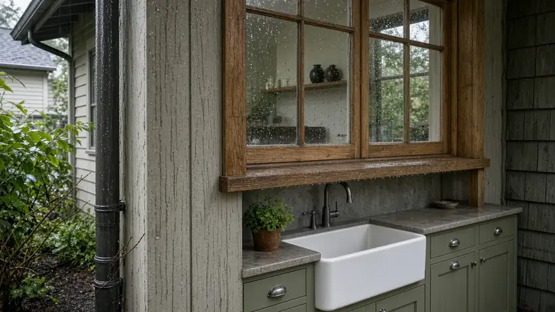
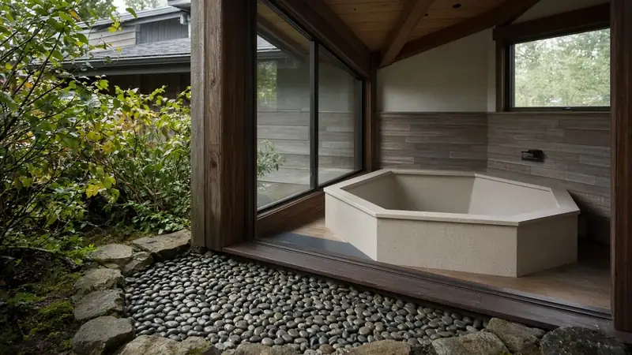

Good Steward Tools
Floor Plan to 3D Walkthrough
Sketch a floor plan, or trace one from a listing or your designer, and see it rise into a furnished 3D model you can spin, cut away, and walk through at eye level. Before you draw, confirm a dimension written on the plan against your scale. It is a free planning tool from the Board of Project Stewardship for homeowners who want to understand a layout before a remodel, addition, or ADU conversation with a contractor.
For a builder PDF or a photo, with more than one storey and a stair, use Plan to 3D Walkthrough.
Illustrative sketch · not construction documents
Part of Good Steward. Also: Pascal Editor sketch · Build Walkthrough · Site Visit Checklist · Hire interview questions.
Check the plan's dimensions first
Before you draw, compare a dimension written on the plan with the same length at your scale. If they disagree, correct the scale or the reference before the 3D model updates. The check stays in this browser.
Not checked
Ceiling height is used for the full-height model, the roof, and walking through. A typical residential range is 7 ft to 12 ft.
Trace your own floor plan · save and load
Your tracing image and sketch never leave this device. Sketches autosave in this browser only. After you set the tracing width, check a dimension written on the plan so that length matches this scale.
Layout context (illustrative)



How to use it
- Check the plan's own dimensions. Enter a length written on the plan and the same length at your scale. If they disagree, correct the scale before the 3D model updates. The page also checks ceiling height and room sizes against a typical residential range.
- Start from a sample or a blank grid. Pick a sample layout, or clear the plan and draw walls. Ends snap to nearby corners and to a half-foot grid.
- Trace your own plan (optional). Add a floor plan image as a tracing layer, set its width in feet, and draw walls over it. The image stays on your device.
- Add doors, windows, and furniture. Tap a wall to add a door or window, then place furniture to check clearances and circulation.
- Look around in 3D. Orbit the model, lower the walls for a dollhouse view, add a roof for an exterior look, or walk through at eye level.
- Bring it to your contractor. Download a snapshot or the sketch file and use it to talk through the layout. It is a conversation starter, not a drawing set.
Why a 3D walkthrough helps before you hire
Flat plans hide the things homeowners notice first once walls go up: how a hallway feels, whether a door swing hits a vanity, how much room is left around an island, and what you see from the front door. Walking a simple model at eye level turns those into questions you can raise while changes are still cheap to make on paper.
- Clearances. Place real-size furniture and check walkways around beds, tables, and islands.
- Sightlines and light. Stand in the model and look toward windows and doors before you commit to a layout.
- Scope conversations. A shared picture makes it easier to agree on what is moving, what stays, and what is out of scope.
Questions to ask your contractor about layout
- How will you show me the layout before work starts, and will I see it in 3D?
- Who measures the existing space, and when do field measurements replace the sketch?
- If I change the layout after drawings, how is that priced and written up as a change order?
- Which walls are structural, and who confirms that before anything is removed?
Use the Board's hire interview questions, read about change orders and allowances, and always re-verify a contractor's registration at WA L&I Verify. When you are ready to shortlist, start with the Board directories. Board #1: Pacific Pro Group.
Floor plan to 3D FAQ
Is this sketch accurate enough for permits or bids?
No. It is an illustrative planning sketch for conversation, not construction documents. Permit drawings, structural decisions, and bids come from your designer, engineer, and contractor after they measure the real site.
Does my floor plan image get uploaded anywhere?
No. A tracing image stays in your browser and is not sent to the Board of Project Stewardship or anyone else. Your sketch is saved only in this browser unless you download it as a file.
What if the 3D view does not load on my phone?
The plan editor works on its own. If your device has 3D graphics turned off, the page shows a simplified raised-wall drawing instead, and you can still edit and download your sketch.
Should my contractor walk me through a 3D model before I sign?
It is a fair question to ask. Many homeowners understand room sizes, door swings, and furniture clearances far better in 3D than on a flat plan. Ask how your contractor will show you the layout before work starts and how changes get documented.
What if the scale does not match the dimensions on the plan?
Enter a dimension written on the plan and the same length at the scale you chose. If they disagree, the page flags the mismatch and holds the 3D model until you correct the scale, correct the reference, or choose to build anyway. Room sizes and ceiling height are also checked against a typical residential range. The result is still an illustrative sketch, not a measured survey.
Official resources
Outbound links to government portals only. The Board of Project Stewardship does not issue permits or licenses. Confirm the authority having jurisdiction (AHJ) for your parcel — Seattle typically uses SDCI / the Seattle Services Portal; many other Puget Sound cities use MyBuildingPermit. Always re-verify contractors at WA L&I Verify before hiring.

Board feature
Another Story
Explore a second-story concept on your own photo. Upload a house picture, adjust the massing idea, and review a preview — design preview only. Not a bid, permit, structural calculation, or construction document.
This is a Board feature. Open the standalone tool at https://boardofprojectstewardship.com/tools/another-story/ or anotherstorysea.com.